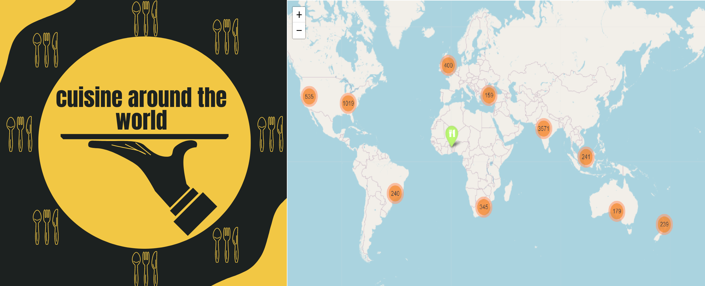

Cuisine Around the World Dashboard
'Cuisine Around the World' é uma plataforma de análise sobre culinária e restaurantes pelo mundo. Ou seja, é uma ferramenta que facilita a pesquisa sobre tipos de culinária e restaurantes em vários países. Essa plataforma foi desenvolvida para atender a empresa Fome Zero.
O Dashboard 'Cuisine Around the World' hospedado em uma cloud e disponivel para acessos em qualquer dispositivo conectado a internet fornece uma rápida análise aos tomadores de decições e uma visão ampla sobre restaurantes e culinária pelo mundo.
O link da plataforma pode ser acessado através da página: https://eezzionn-cuisines-around-world.streamlit.app/
As ferramentas utilizadas foram:
- Python.
- Jupyter Lab.
- Terminal.
- Streamlit.
- Streamlit Cloud.
- Github